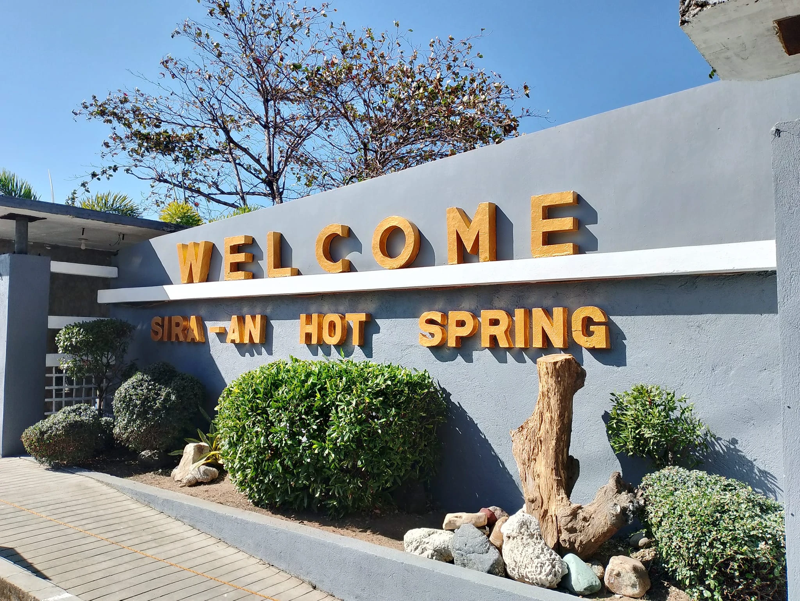
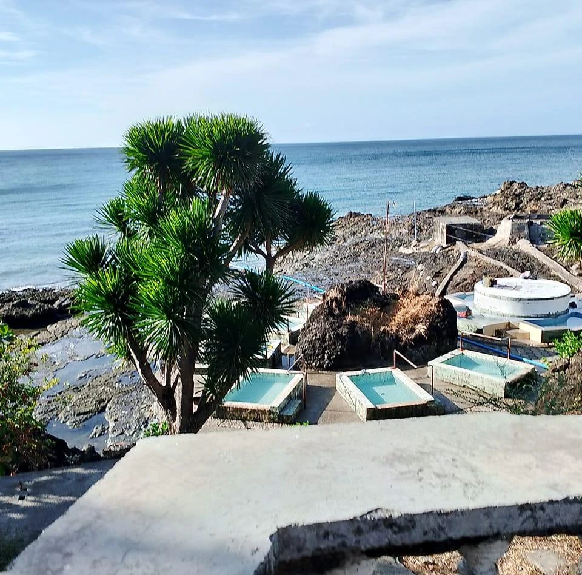
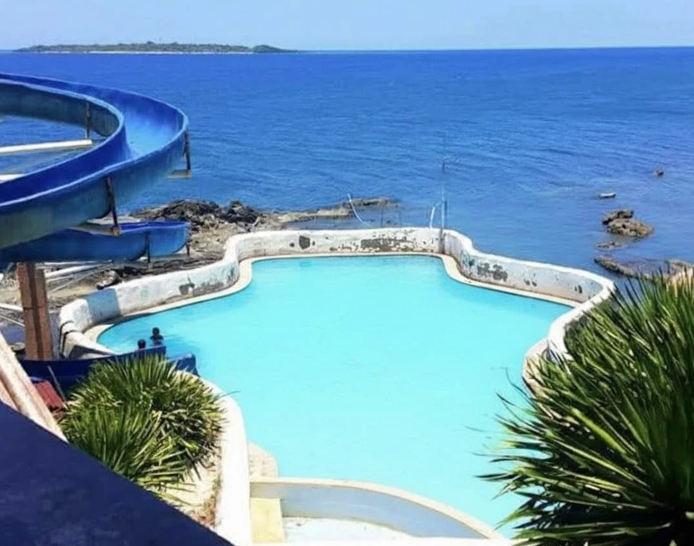

Our Story


Sira-an Hot Spring is a natural geothermal wonder located in the coastal barangay of Sira-an, Anini-y, Antique. Heated by the earth's volcanic activity, its mineral-rich waters flow into seaside pools where you can soak while gazing at the vast Sea.
The resort features multiple pools at different temperatures, from warm therapeutic baths to a large oceanfront swimming pool with a water slide. Whether you come for healing, relaxation, or family fun, Sira-an delivers an experience unlike any other in the Visayas.
Beyond the hot springs, visitors can explore nearby attractions including Nogas Island, Punta Nasog, the historic Baroque Church, and the scenic Mt. Aliw-Liw.